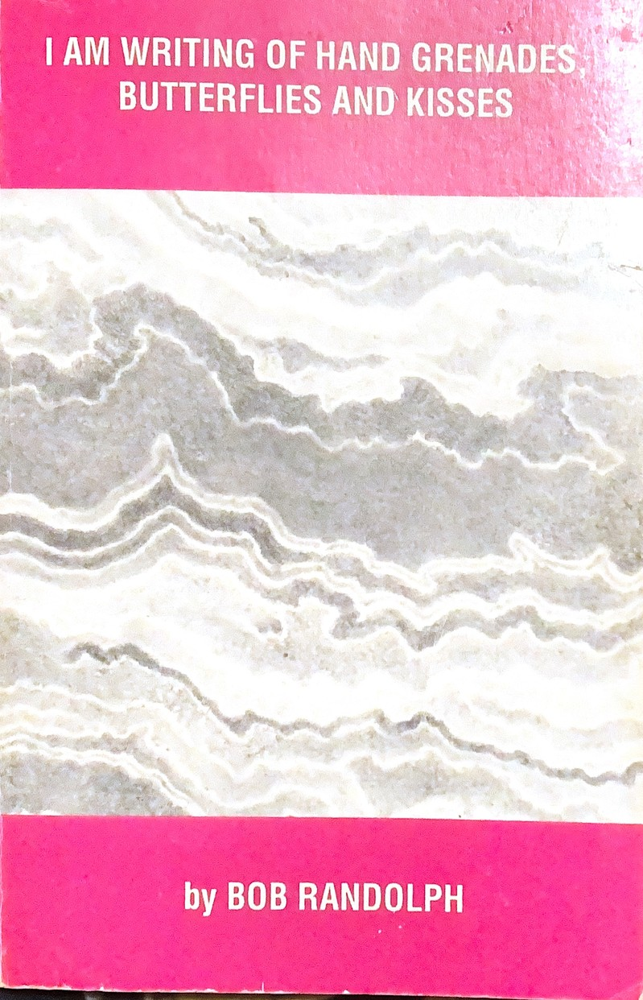

El Tecolote Blanco: Space and Time Travel scanned pages · in progress
~50 poems, dedicated to Eldridge Cleaver, introduction by Rev. Tom Sanders. Physical copy only — the cover, table of contents and introduction are up; the poems follow as page photographs arrive.

El Tecolote Blanco: A Bob Randolph Sampler scanned pages · live
The complete 120-page sampler, with Eldridge Cleaver’s introduction. Pages 12–13 are still to be photographed.

Yokohama Rickshaw Boy scanned pages · live
Subtitled “a book about ‘Sketches of Strangers.’” Mostly dated 1989–1991.

Zumi the Cockatoo scanned pages · live
Subtitled “book about nature.” Opens with the title poem, “Zumi the cockatoo” (January 1991).

The Poetry Bob Randolph Considers His Best and Most Representative scanned pages · live
“Or another way, the things he cares about the most.” 134 pages, with its own table of contents; opens with “A requiem for capitalism and all the rest of us.”

I Am Writing of Hand Grenades, Butterflies and Kisses cover only
Randolph House Press, Berkeley, October 1991. ISBN 1-881969-25-8. The preface begins “Okay, so I wrote a book of poetry.” Cover artwork by Larry Melnick. Cover is up; the pages follow as photographs arrive.

The 3rd Planet from the Sun Is in Flames cover only
Subtitled “thoughts for the late 20th and early 21st centuries.” May 1999. Cover is up; the pages follow as photographs arrive.

Exploring Our Fears of Death cover only
“Is there a hereafter? I don’t think we really know.” Cover is up; the pages follow as photographs arrive.

Saving Our Planet? cover only
“Let’s start with the oak trees in Berkeley.” Cover is up; the pages follow as photographs arrive.

My Mother Never Did Have Dinner Ready on Time cover only
A book on aging. Cover is up; the pages follow as photographs arrive.
Chapbooks
The Last Chapman
A chapbook is a small, inexpensive booklet—usually under fifty pages, saddle-stitched or stapled at the spine, and bound tightly around a single theme or a connected run of poems. The name stretches back to the “chapman,” the old English word for the itinerant peddlers who carried woodcut-illustrated booklets in their packs, selling them door-to-door for pennies. Popular across Europe from the sixteenth to the eighteenth centuries, these pocket-sized prints democratized literacy, carrying everything from bawdy ballads and folklore to radical religious tracts. In the mid-twentieth century, this low-fidelity medium was revived by the American Beat poets. In the smoky, postwar air of San Francisco, the chapbook became the ultimate weapon against mainstream publishing houses—a way to get uncensored, counterculture writing into readers' hands quickly, cheaply, and with the ink practically still wet. This raw, DIY lineage is exactly how Bob distributed his own work. He published the way the Beats did, operating in that same fertile slipstream of North Beach and Berkeley, a world fueled by self-published mimeo-machine zines and politically charged verse.
A Voice Forged in Jazz and Verse
Bob’s writing style was defined by its relentless, rhythmic urgency. His poems did not sit quietly on the page; they were written to be read aloud, inheriting the jazz-infused cadence of early performance poetry and the booming power of public rallies. He stripped away academic pretense in favor of a raw, colloquial voice—pairing cosmic imagery of space and time travel with the gritty, concrete realities of street-level resistance. By publishing his collection, El Tecolote Blanco: A Bob Randolph Sampler, through his own independent Randolph House Press in Berkeley, Bob ensured his typography—haphazardly aligned and stamped onto cheap paper—carried the same rebellious energy as the words themselves.
Dedications and Covers
Bob dedicated El Tecolote Blanco: Space and Time Travel to Eldridge Cleaver, and Cleaver wrote the introduction to El Tecolote Blanco: A Bob Randolph Sampler (1995). The cover of I AM WRITING OF HAND GRENADES, BUTTERFLIES AND KISSES (Randolph House Press, October 1991) carries artwork by Larry Melnick, a Berkeley painter.